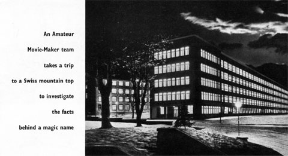
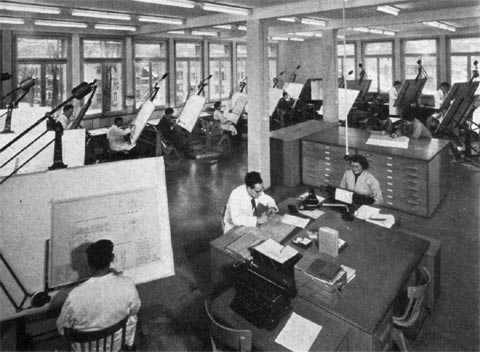
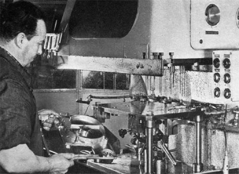
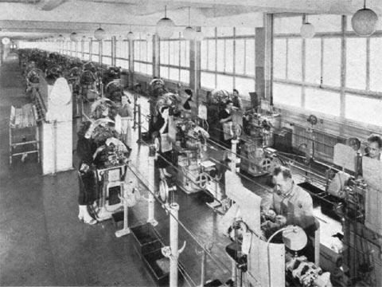
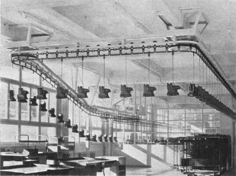
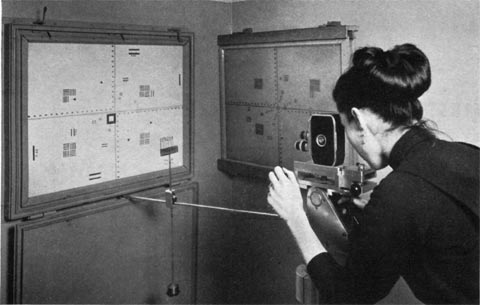

We Visit Paillard-Bolex
January 26, 2007 -- Article reprinted from Amateur Movie-Maker (1959) [1]
An Amateur Movie-Maker team takes a trip to a Swiss mountain top to investigate the facts behind the magic name
LIKE ROLLS ROYCE, the name Paillard-Bolex (Top People pronounce it "pie-ard" Bolex) has a certain hypnotic flavour that can't be explained entirely in rational terms.
When the American magazine U.S. Camera questioned its readers about their photographic apparatus, 13.9 per cent of the respondents who already owned movie cameras said they were Bolex users. But among those who intended to purchase a movie camera within the next year, no less than 35 per cent declared they would buy Bolex. One may suspect that the second figure indicates a certain degree of wishful thinking, for Paillard products have never really competed in the popular price market. Amateurs the world over associate them with precision plus dependability plus something else -- perhaps "glamour" is the word.
It was with the idea of investigating all these qualities that we recently accepted an invitation to visit the company's factory at Ste. Croix in Switzerland.
No one would picture a Bolex camera being made in a grimy industrial town, but the actual setting is even more fabulous than we imagined. Ste. Croix is a remote mountain village on a road that leads to nowhere, surrounded by deep snow for almost five months in every year. Our route took us by air to Geneva, then by rail to Yverdon and finally by steep zig-zag road in a slippery, ear-popping ascent through the clouds.
Many of Paillard's 3,000 employees arrive in the morning by mountain railway (everyone from the director level downwards starts work at 7:30 a.m.). At knocking-off time, you can see dozens of them streaking away from the factory on skis.
The factory building itself, with its large daylight windows and clean-cut modern lines, dwarfs the village houses that are clustered around it. The entrance hall has something of the air of a London hospital, and there to meet us was Mr. Ashenden, a spry young man from the sales department who looks after orders from the United Kingdom.
We immediately congratulated him on his almost perfect English, only to learn that he is English, but settled in Switzerland several years ago and married a Swiss girl from whom he has acquired fluent French, German and Spanish together with a slight European accent.
Our tour of the works began with a quick look at the raw material stock room. Piles of metal bars, strips, ingots, spring coils and tubing were all in regimental order and here precautions were already being taken to safeguard the quality of the finished product. Each consignment is carefully inspected on arrival and samples are taken for the analysis of structure, hardness and fatigue strength. Humidifiers, installed at strategic points, repel rust.

We passed on to the manufacturing and tooling department where the clinical atmosphere reasserted itself -- the place was so clean we half expected the machine operators to be wearing medical masks. Many of the delicate tools -- and even entire machines -- are produced by Paillard themselves.

The pride of the department is a jig boring machine which can turn out work accurate to within 0.00004 inches. The man in charge of it opened a steel cabinet to show us its various drills and accessories, opening each drawer with a kind of tender affection.

In the production department, we saw a whole army of independently powered machines, several of which, incidentally, were British made. Some of the lathes are set to perform nine or ten operations automatically, turning bars of metal into spindles, pivot pins, screws and other small parts. One, having been fed with the necessary raw material, turns out special washers for two months nonstop.

Perhaps the most impressive machine of all was the electrostatic varnisher which gives the finish to Bolex projectors. One of the first to be used in Europe, it is installed in an airtight room in which the air pressure is kept slightly above normal to prevent rust from entering. The parts to be treated are hooked on to a circular chain which conveys them into varnishing domes and here they pass a magnetic field which is activated by an electrical potential of 100,000 volts. This instantly attracts the negatively charged particles of a special varnish and causes them to be precipitated. It also leaves a permanent static charge that helps to repel dirt and dust on the finished product. The final treatment is baking in an oven, kept at 250° F., where the varnish sets hard.
Automation such as this has not, however, replaced craftsmanship at Paillard. Witness the fact that each component has an identity card bearing the signature of every fitter who has worked on it. Assembly is carried out by specialists whose devotion to the job is often inherited from three or four generations back. For the Paillard company was founded in 1814 and started by making highly ornate musical boxes, an original specimen of which is now displayed in the bar of Ste. Croix's only hotel.
The name Bolex was bequeathed, together with a design idea for the first Bolex camera, by a Russian -- one Jacques Bogopolski who had changed his name to Bolski and later, after emigrating to the United States, changed it again to Bolsey. Bolski, as he then was, settled in Geneva in the late twenties and there produced a 35mm camera and projector combined, which he called the "Bol". A 16mm version followed and this was christened "Bolex".
BOLSKI'S BUSINESS
Ernest Alfred Paillard (who is still President of the Council of Management at the Ste. Croix factory) thought there was something in the idea of encouraging amateurs to produce their own motion pictures. In 1930, he acquired Bolski's business and, for a period of five years, his services as well. Swiss method became allied to Russian inventiveness and a legend was born.
Right from the start special emphasis was placed on checking and testing for accuracy and today more time is devoted to this than to actual production and assembly.
Before leaving the workshops for the assembly lines, every part is subjected to a last minute scrutiny, carried out by means of optical enlarging instruments on which it can be lined up against a pattern and magnified so that the slightest discrepancy is revealed. At all stages of manufacture, cameras are kept in dust-proof plastic boxes.
FINAL CHECK
The Bolex H16 camera is inspected no less than sixty times before it is completed. Once finished, it is given a final check up on 300 different operations, including filming speeds, steadiness, accuracy and torque of the motor. And finally, two films are exposed in it: one under normal conditions and one under laboratory conditions.
Of the factory's total output, about 50 per cent goes to Europe, 25 percent to the United States and 25 per cent to the rest of the world. The biggest European market is Germany, followed by France, Italy and then Britain.

Paillard do not lose interest in their cameras after they have left the factory. Liaison with the customer is maintained through an international after-sales service and M. Walter Stehle, Assistant General Sales Manager, told us that amateurs often write direct to Ste. Croix with suggestions for design improvements. (Some of these letters are cranky, some repeat old ideas, but a few are adopted and paid for.)
The Company's Publicity Controller, M. Jean de Senarclens, showed us an impressive 16mm colour film, compiled from snippets of amateur work which were submitted by Bolex users in many parts of the world. This is now being dubbed with an English commentary and may be shown at the London Photo Fair in May.
During three crowded days in Switzerland, we saw and heard more than we can clearly record, but from the kaleidoscope of impressions one conversation stands out clearly. We asked M. Andre Thorens, an executive who has been with the company for thirty years, how to account for the rather special reputation achieved by Bolex. It was a clear invitation to give a flamboyant reply -- something about the mystique of precision engineering or the purity of the mountain air. In fact, he explained soberly that because of the small home market Swiss firms can never hope to compete on a price basis (import duties would always defeat them), so the only sensible policy is to concentrate on quality. Paillard's power of concentration is clearly considerable.
1 This article is reprinted as it originally appeared in an issue of Amateur Movie-Making -- a UK magazine devoted to cine enthusiasts. The original date is unkown, but it is believed to have been published in 1959.